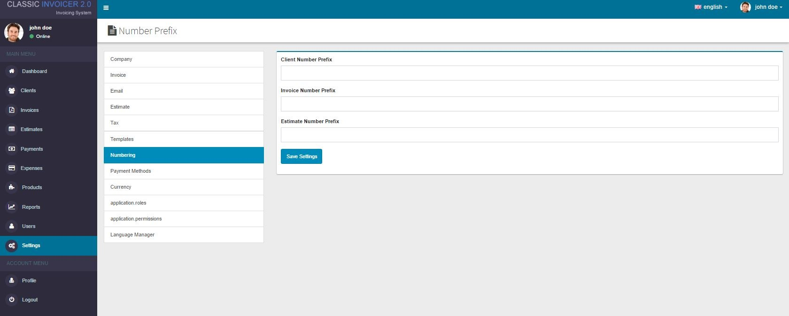

Classic Invoicer Documentation
Created by : Elant Systems
Email : support@elantsys.com
Introduction
Classic Invoicer is a web-based invoicing application implemented using Laravel 5 framework. It uses JQuery and MYSQL database. . It uses JQuery and MYSQL database. Classic Invoicer system will give you the opportunity to create custom invoices and send them to your clients directly, it will also help you in managing and tracking your income and expenses by the detailed reports it produces.
Requirements
- Web Server
- PHP
- MySQL Database Server
Pre-Installation Steps
This is a web based solution that needs its relevant files to exist on the web server. The files can be copied to the web server by extracting the download package on your computer and uploading its contents to the web server via FTP, or by copying the download package to the web server directly and extracting its contents there.
The contents of the download package need to be copied to the public HTML directory in the web server it is serving from.
Examples of public HTML directories are:
- /home/invoice/public_html/
- /srv/www/htdocs/
- /usr/local/htdocs/
- /var/www/vhosts/invoice.com/httpdocs/
Installation
a. Minimum System Requirements
The installation process is quick and straight forward, after uploading the files to your web server, open your browser and navigate to the install url by typinghttp://[yourdomain]/[youappfolder]/install
After entering the above url the install screen should appear as shown below

The installer will begin by checking the whether the minimum system requirements have been met, after every test passes successfully, it’s time to begin the installation process. Click on the “Let’s Begin” button to start the installation.
b. Database Settings
Fill in your database details i.e. the hostname, database user, database password and the database name in the next page that look like this
Fill in the database details as click on the submit button, in this stage the application will attempt to create the database if it doesn’t already exist, it will also, create the required tables.
NB. In most servers you will have to create the database manually and assign a user to it and then continue with the installation process.
c. Create user account
This stage may take some time to complete depending on your system, after the process has completed successfully you will be redirected to the last step where you create a user account that you will use to login.
Fill in your user account details in the form that appears, this will create a user account in the database, this is the account you will use to login to the system for the fiirst time. After entering all the details correctly, click on the submit button, if you entered everything correctly you should be redirected to the login page.
Hurray, that’s all!!!! You are now ready to starting creating your client list and invoicing them as well as recording your expenses Hope you enjoy using the application.
Feel free to customize the script in whichever way that suits your requirements.
Post Installation
The first step after the installation is to setup the system settings so that you can add details for your business. This can be done under the settings menu. The settings section has the following sub sections
- Company
- Invoice
- Tax
- Templates
- Numbering
- Payment Methods
- Currency
- Roles
- Permissions
- Language Manager
- "Append new translations" is used when you have added a new translation in the views and have not added them to the database, for you to be able translation them you need to add them to the database by selecting append new translations and then click on find translations in files. This action will scan all the files and look for any new translation keys that you may have added in the files.
- "Replace existing translations" is used when you want to replace all the translation keys in the db with new ones from the files. The action will scan through all the files and get all the translation keys, then it will replace all the keys in the db with the ones from the files.
- "Import groups" is used to import the translations groups from the files and save them into the database.
In this section you set the details of your company like the name, address, email, contact, logo etc.
Here you will be able to set the details for the invoices you will be generating, things like the logo, start number, invoice terms and invoice due days
Here you will be able to set the mail server details by setting the mail protocol, the smtp hostname, the smtp username, smtp password and the port number. These details will be used when sending invoices and estimates to your clients.
For invoices and estimates to be sent via email, the details must be provided.
Create your tax rates here and set which one is the default one.
In this section you will be able to set email templates that are to be used when you send invoices and estimates to your clients.
Here you set the Numbering prefix for the customer numbers, invoice numbers and estimate numbers.

In this section you will be able to create/edit/delete payment methods, you can also set the default method.
Here is where you manage the different currencies that will be used in your application. You can also set which currency will be the default one.
In this section you can create as many roles as possible who will have different access levels that you will assign permissions in the permissions module.
This is where you set the permissions for different user roles in the system.
In the language manager section, you will be able to translate the application into various languages.
The module has been made as simple as possible so that you are able to translate using the web interface. You start by adding a new language by clicking on the “create locale” button on the top right hand corner.
A new window will come up where you enter the language name, the short name, status and language flag.
To view the translations, click on the “view” button, By default the application comes with translation keys already added in the script.
Here you can append new translations or replace existing translation.
You can also add keys in the database using this web interface, you just need to select the group that you want to add the keys for from the dropdown field and then enter the keys in the textarea each key per line without the group prefix.
After you are done listing the keys click on add keys button at the bottom and it will save the keys to the database, you can now use the keys in the files.
To edit a key, just click on the key you want to edit and a popover will appear above the key
Click on the blue button with a tick on the right to save the key.
After you are done editing all keys you wanted to edit, click on the “Publish translations” Button at the far button in order to save you changes to the database and also append then in the language files.
PLEASE NOTE:
For recurring invoices to be sent automatically, you need to add the following Cron entry to your server
* * * * * cd /{path-to-your-project} && php artisan schedule:run >> /dev/null 2>&1
Remember to replace {path-to-your-project} with the correct path to the classic invoicer core folder.
For Example
* * * * * cd /home/username/public_html/core && php artisan schedule:run >> /dev/null 2>&1
User Guide
1. Dashboard
The Dashboard is the main screen that appears immediately after logging in. The dashboard mainly contains the links to the different functions that the system user will be performing which include:-
- Managing Clients
- Creating/editing/deleting invoices
- Creating/editing/deleting Estimates
- Creating/editing/deleting payments
- Creating/editing/deleting expenses
- Managing products
- Generating reports
- Generating new system users
- Editing system settings
- Managing tax rates
- Managing payment methods
2. Clients
The clients menu allows one to create, edit and delete system clients, when you click on the clients menu, the following window will appear.
To create a new client, click on the “New Client” blue button on the right side of the client list window. A modal window will appear where you can enter the details of the client
NB. You can set the client number prefix from the settings menu under numbering section.
3. Invoices
In this section, you will be able to set up your invoices, edit, add payments to the invoices and even send them to your clients.
NB. You can set the client number prefix from the settings menu under numbering section.
4. Estimates
In this section you will be able to create Estimates for your clients; you can also edit existing estimates from here.
NB. You can set the client number prefix from the settings menu under numbering section.
Client Area
The client area allows customers to view their estimates and invoices, the customers are also able to view reports of how they have spent their money and how much they owe you.
To access the client area panel visit http://[your_domain]/clientarea
Customers can also make payments to the outstanding invoices.
Acknowledgement
I really hope this documentation is detailed enough to get you started on using the system, for any issues that are not covered in this documentation, please contact me via my email. You can also hire me to customize the system for you at a reasonable fee.
Once again, thank you so much for purchasing this script. As I said at the beginning, I'd be glad to help you if you have any questions relating to this script. No guarantees, but I'll do my best to assist. I will also be updating the script every now and then so watch this space ;)
I kindly request you to rate the script on codecanyon.net and I will greatly appreciate.
NB. All the images are used for DEMO purposes only. I am not responsible for copyrights issues.
Thank you for purchasing my application, if you have any questions that are beyond the scope of this documentation, please feel free to email me via the email provided above.
Enjoy and best of luck!
Elantsys.